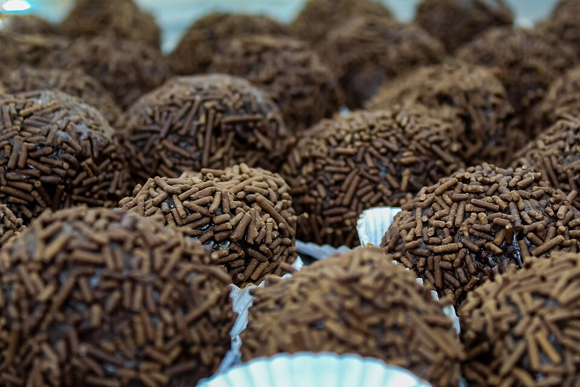

Brigadeiro

Photo: Márcia Cristina Machado
Description
Brigadeiro is a traditional Brazilian delicacy similar to a chocolate truffle. Made from sweetened condensed milk, cocoa powder, and butter, it's a staple at every Brazilian celebration.
Ingredients
- 1 can of sweetened condensed milk (395g)
- 4 tablespoons of 50% cocoa powder
- 1 tablespoon of butter
Steps
- In a deep saucepan, add all the ingredients and mix well.
- Cook over low heat, stirring constantly until the mixture pulls away from the bottom of the pan (about 10 minutes).
- Remove from the heat, transfer to a buttered plate, and let it cool.
Return to Home Page